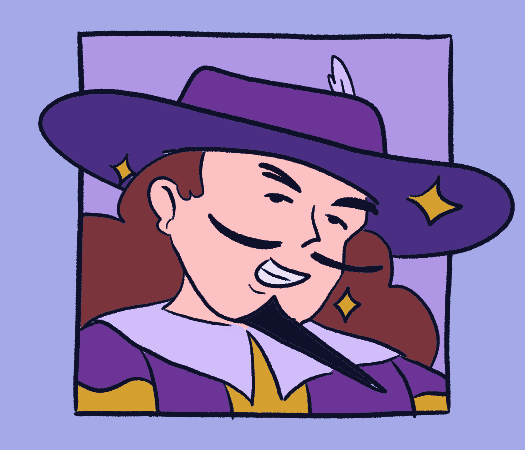
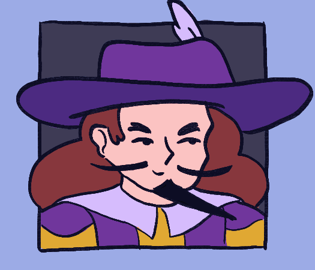

Nico
Nico is the main side character, the second in the main trio in between Milo and Gus. His goal is to become the greatest hero in the kingdom, which drove him to accept the quest to rescue Princess Miranda. But unfortunately for him, Milo ended up having to tag along! Nico is cunning, debonair, and devious. He's really only after being a hero for the fame and fortune involved, and he usually twists any heroic advice he gives Milo to fit his current situation.
Image Gallery
This is where I will later have images and concept art of this character.


- Stats -
Strength: A
Dexterity: C
Constitution: B
Intelligence: C
Wisdom: D
Charisma: S